资源
课程
Lecture 05 Rasterization 1 (Triangles)
Perspective Projection 透视投影
-
What’s near plane’s then?
那么，near 平面的 是什么？
-
If explicitly specified, good
如果有明确规定，这很好
-
Sometimes people prefer: vertical field-of-view (fovY) and aspect ratio (assume symmetry i.e. )
有时人们更喜欢：垂直视野和纵横比（假设对称性，即）
-

-
How to convert from fovY and aspect to ?
如何将垂直视野和纵横比转换为 ？

Canonical Cube to Screen 标准立方体到屏幕
-
What is a screen?
什么是屏幕？
-
An array of pixels
像素阵列
-
Size of the array: resolution
阵列大小：分辨率
-
A typical kind of raster display
一种典型的光栅显示器
-
-
Raster == screen in German
光栅 == 德语的屏幕
-
Rasterize == drawing onto the screen
光栅化 == 在屏幕上绘制
-
-
Pixel (FYI, short for “picture element”)
像素（仅供参考，“图像元素”的缩写）
-
For now: A pixel is a little square with uniform color
目前：像素是一个颜色均匀的小方块
-
Color is a mixture of (red, green, blue)
颜色是（红、绿、蓝）的混合物
-
{kind=link}
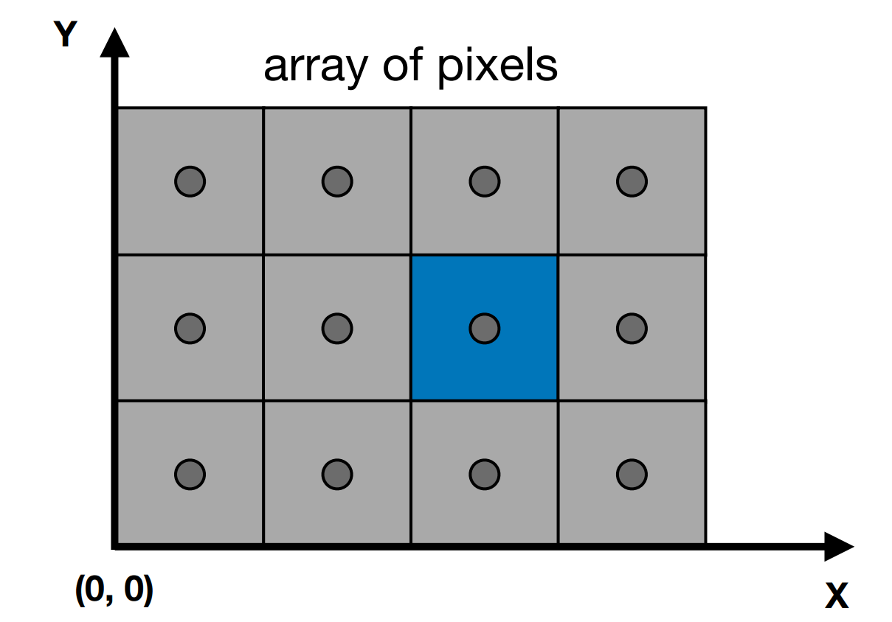
-
Pixels’ indices are in the form of , where both and are integers.
像素的索引采用 的形式，其中 和 都是整数
-
Pixels’ indices are from to
像素的索引从 到
-
Pixel is centered at
像素 以 为中心
-
The screen covers range to
屏幕覆盖范围从 到
-
Irrelevant to
与 轴无关
-
Transform in plane: to
在 平面中变换： 到
-
Viewport transform matrix:
视点转换矩阵：（缩放 + 平移，不管 轴）
Drawing Machines 绘制仪器
- CNC Sharpie Drawing Machine 绘图机
- Laser Cutters 激光切割机
Different Raster Displays 不同于光栅显示
-
Oscilloscope
示波器
-
Television - Raster Display CRT
电视-光栅显示器 CRT
-
Frame Buffer: Memory for a Raster Display
帧缓冲区：光栅显示的内存
-
Flat Panel Displays
平板显示器
-
LCD (Liquid Crystal Display) Pixel
LCD（液晶显示器）像素
-
Principle: block or transmit light by twisting polarization
原理：通过扭曲偏振阻挡或透射光
-
Illumination from backlight (e.g. fluorescent or LED)
背光照明（例如荧光灯或 LED）
-
Intermediate intensity levels by partial twist
部分扭曲的中等强度水平
-
-
LED
阵列显示器
-
Light emitting diode array
发光二极管阵列
-
-
Electrophoretic (Electronic Ink) Display 电泳（电子墨水）显示器
- 刷新率低，不适合看视频
Rasterization: Drawing to Raster Displays 光栅化：图形到光栅显示
Triangles - Fundamental Shape Primitives 三角形-基本形状基元
Why triangles?
为什么是三角形？
-
Most basic polygon
最基本的多边形
-
Break up other polygons
分解其他多边形
-
-
Unique properties
独特的特性
-
Guaranteed to be planar
保证平面
-
Well-defined interior
明确的内部
-
Well-defined method for interpolating values at vertices over triangle (barycentric interpolation)
定义良好的三角形顶点插值方法（重心插值）
-
{kind=link}
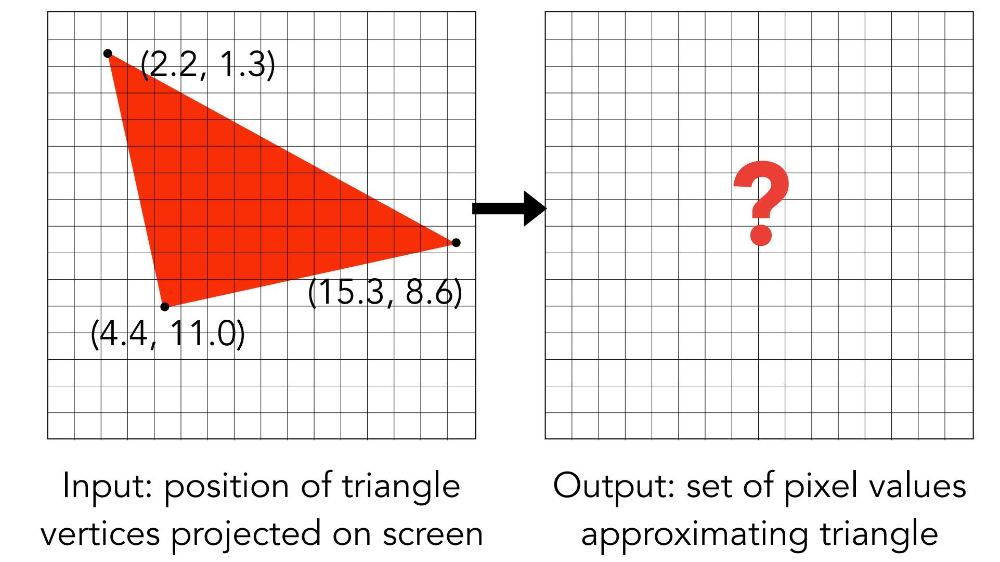
-
Input: position of triangle vertices projected on screen
输入：投影在屏幕上的三角形顶点的位置
-
Output: set of pixel values approximating triangle
输出：近似三角形的像素值集
A Simple Approach: Sampling 一种简单的方法：采样
Sampling a Function 对函数进行采样
Evaluating a function at a point is sampling.
在一点上评估函数就是采样。 We can discretize a function by sampling.
我们可以通过离散函数来采样。
for (int x = 0; x < xmax; ++x)
output[x] = f(x);Sampling is a core idea in graphics.
采样是图形的核心思想。 We sample time (1D), area (2D), direction (2D), volume (3D) …
我们采样时间（1D）、面积（2D）、方向（2D）和体积（3D）…
Define Binary Function 定义二值化函数: inside(tri, x, y)
Rasterization = Sampling A 2D Indicator Function 光栅化 = 对 2D 指示器函数进行采样
for (int x = 0; x < xmax; ++x)
for (int y = 0; y < ymax; ++y)
image[x][y] = inside(tri, x + 0.5, y + 0.5);通过判断像素点是否在三角形内部来决定上色。
Inside? Recall: Three Cross Products!
判断像素点是否在像素点内部可以用向量叉积来表示。
Edge Cases (Literally) 边缘案例（字面意思）
Is this sample point covered by triangle 1, triangle 2, or both?
这个采样点是被三角形 1、三角形 2 覆盖，还是两者都覆盖？

一般都是自定义。
Incremental Triangle Traversal (Faster?)
更快的判定点是否在三角形内部的算法：扫描线算法
{kind=link}
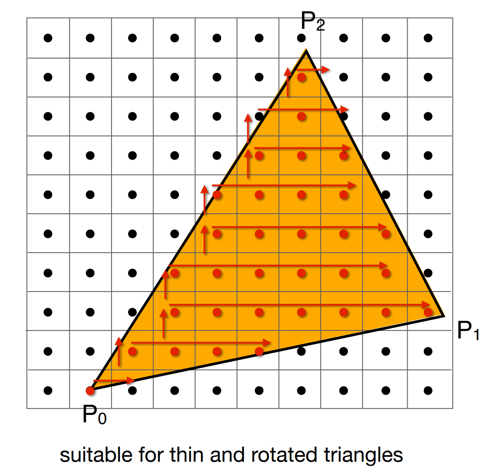
Rasterization on Real Displays 真实显示器上的光栅化
Real LCD Screen Pixels (Closeup) 真实 LCD 屏幕像素（特写）
{kind=link}
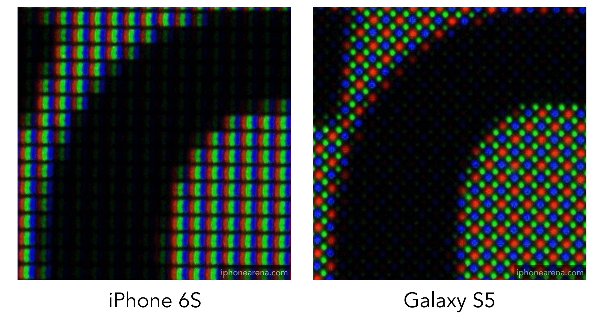
Notice R,G,B pixel geometry! But in this class, we will assume a colored square full-color pixel.
注意 R，G，B 像素的几何图形（绿色更密集，因为人眼对绿色更敏感）！但在这个课程中，我们将假设一个彩色正方形全色像素（像素为图形的最小单位）。
Aside: What About Other Display Methods?
旁白：其他显示方法呢？
{kind=link}
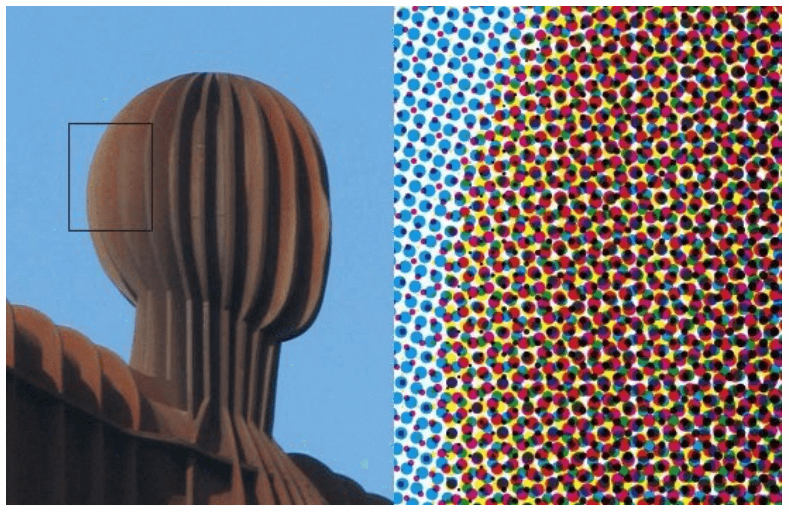
彩色印刷：观察半色调图案
Assume Display Pixels Emit Square of Light
假设显示像素发射正方形光
LCD pixels do not actually emit light in a square of uniform color, but this approximation suffices for our current discussion
*LCD 像素实际上并不以均匀颜色的正方形发光，但近似值足以应付我们目前的讨论
Lecture 06 Rasterization 2 (Antialiasing and Z-Buffering)
上节课得出的三角形，会出现很多锯齿。
Sampling is Ubiquitous in Computer Graphics 采样在计算机图形学中无处不在
-
Rasterization = Sample 2D Positions 光栅化 = 采样 2D 位置
-
Photograph = Sample Image Sensor Plane 照片 = 样本图像传感器平面
-
Video = Sample Time 视频 = 采样时间
Sampling Artifacts (Errors / Mistakes / Inaccuracies) in Computer Graphics 计算机图形学中的采样伪像（错误/错误/不准确）
- Jaggies (Staircase Pattern)（楼梯样式）

- Moiré Patterns in Imaging 成像中的莫尔条纹
{kind=link}
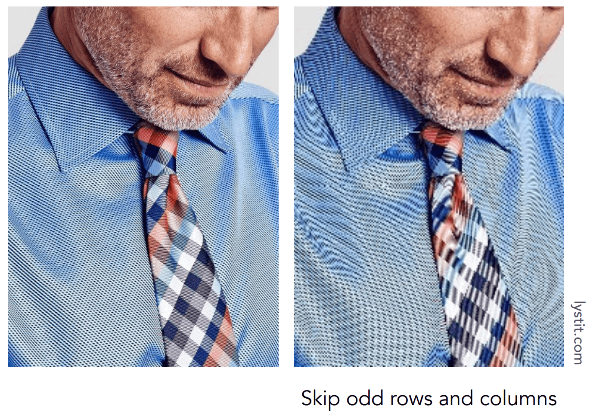
- Wagon Wheel Illusion (False Motion) 车轮错觉（假动作）
- 车轮转太快的时候，看起来像反着转。
- Behind the Aliasing Artifacts 混叠伪影的背后
- Signals are changing too fast (high frequency), but sampled too slowly 信号变化过快（高频），但采样过慢
Antialiasing Idea: Blurring (Pre-Filtering) Before Sampling 抗锯齿思想：采样前模糊（预滤波）
- Rasterization: Point Sampling in Space 栅格化：空间中的点采样
{kind=link}
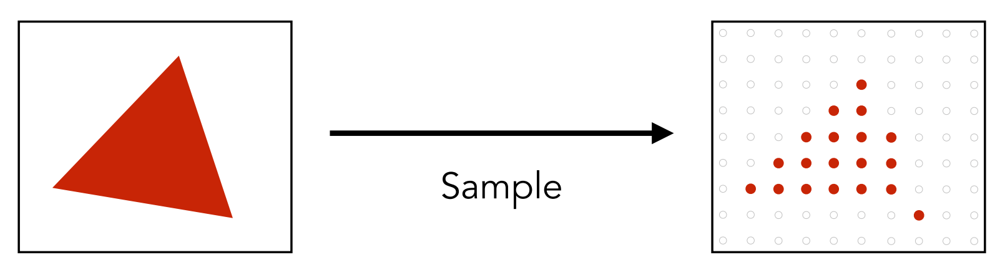
Note jaggies in rasterized triangle where pixel values are pure red or white
注意光栅化三角形中像素值为纯红色或白色的锯齿
Rasterization: Antialiased Sampling 光栅化：抗锯齿采样

Note antialiased edges in rasterized triangle where pixel values take intermediate values 注意光栅化三角形中的抗锯齿边，其中像素值取中间值
Antialiasing vs Blurred Aliasing 消除混叠与模糊混叠

先采样再模糊是不对的！
But why? 但为什么呢？
- Why undersampling introduces aliasing? 为什么欠采样会引入混叠？
- Why pre-filtering then sampling can do antialiasing? 为什么先滤波后采样可以做抗锯齿？ Let’s dig into fundamental reasons 让我们深入探究根本原因 And look at how to implement antialiased rasterization 看看如何实现抗锯齿光栅化
Frequency Domain 频域
Fourier Transform Decomposes A Signal Into Frequencies 傅立叶变换将信号分解为频率（时域与频域相互转换）
{kind=link}
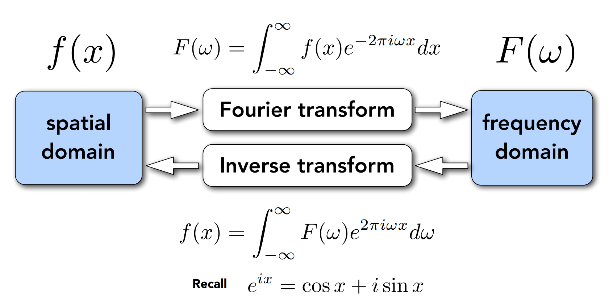
Higher Frequencies Need Faster Sampling 更高的频率需要更快的采样
{kind=link}
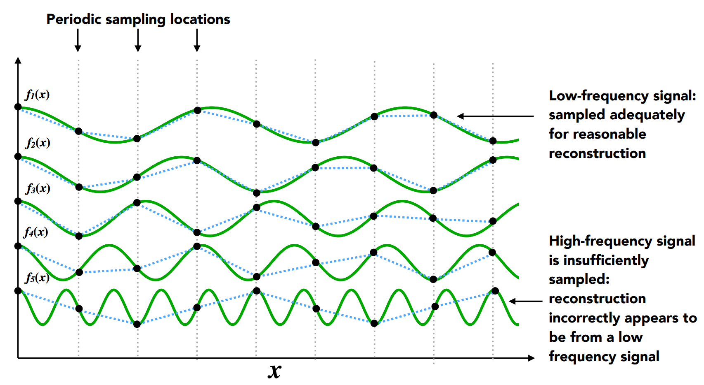
-
Low-frequency signal: sampled adequately for reasonable reconstruction
低频信号：充分采样以进行合理重建
-
High-frequency signal is insufficiently sampled: reconstruction incorrectly appears to be from a low frequency signal
高频信号采样不足：重建错误地显示为来自低频信号
Undersampling Creates Frequency Aliases 欠采样创建频率混叠
- High-frequency signal is insufficiently sampled: samples erroneously appear to be from a low-frequency signal
- 高频信号采样不足：样本错误地看起来来自低频信号
- Two frequencies that are indistinguishable at a given sampling rate are called “aliases”
- 在给定的采样率下无法区分的两个频率被称为“别名”
Filtering = Getting rid of certain frequency contents 过滤 = 去除某些频率内容
{kind=link}
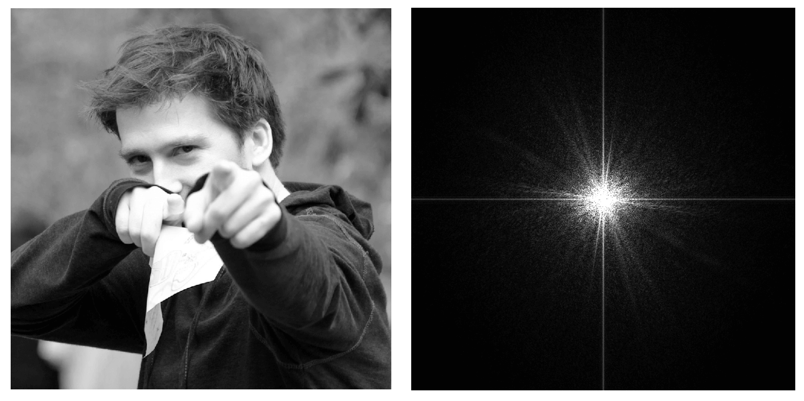
对图像进行傅里叶变换。
Filter Out Low Frequencies Only (Edges) 仅滤除低频（边缘）

Filter Out High Frequencies (Blur) 滤除高频（模糊）
{kind=link}
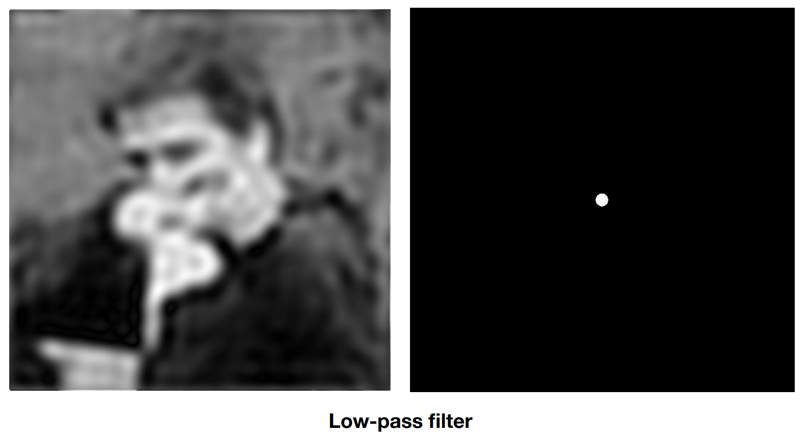
Filter Out Low and High Frequencies 滤除低频和高频

Filter Out Low and High Frequencies 滤除低频和高频

Filtering = Convolution (= Averaging) 滤波=卷积（=平均）
卷积定理
Convolution Theorem
空间域中的卷积等于频率域中的乘法，反之亦然
Convolution in the spatial domain is equal to multiplication in the frequency domain, and vice versa
Option 1: 选项 1：
-
Filter by convolution in the spatial domain
在空间域中通过卷积进行滤波
Option 2: 选项 2：
-
Transform to frequency domain (Fourier transform)
变换到频域（傅立叶变换）
-
Multiply by Fourier transform of convolution kernel
乘以卷积核的傅立叶变换
-
Multiply by Fourier transform of convolution kernel
转换回空间域（傅立叶逆变换）

-
Box Function = “Low Pass” Filter
方框函数 = “低通”滤波器
-
Wider Filter Kernel = Lower Frequencies
较宽滤波器内核 = 较低频率
Sampling = Repeating Frequency Contents 采样 = 重复频率内容

Aliasing = Mixed Frequency Contents 混叠 = 混合频率内容（这是不好的）

Antialiasing 抗锯齿
How Can We Reduce Aliasing Error? 如何减少混叠错误？ Option 1: Increase sampling rate 选项 1：提高采样率
-
Essentially increasing the distance between replicas in the Fourier domain
本质上增加了傅立叶域中副本之间的距离
-
Higher resolution displays, sensors, framebuffers…
更高分辨率的显示器、传感器、帧缓冲区…
-
But: costly & may need very high resolution
但是：成本高昂，可能需要非常高的分辨率
Option 2: Antialiasing 选项 2：消除混叠
-
Making Fourier contents “narrower” before repeating
在重复之前使傅立叶内容“变窄”
-
i.e. Filtering out high frequencies before sampling
即在采样前滤除高频
Antialiasing = Limiting, then repeating 抗锯齿=限制，然后重复
{kind=link}
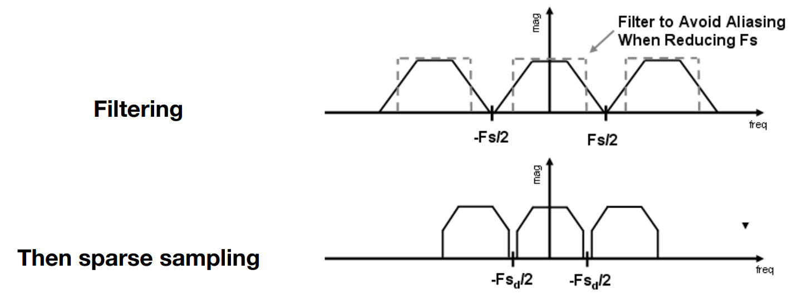
Antialiasing By Averaging Values in Pixel Area 通过平均像素区域中的值消除混叠 Solution: 解决方案：
-
Convolve by a 1-pixel box-blur
通过1像素框模糊对f（x，y）进行卷积
-
Recall: convolving = filtering = averaging
回想：卷积 = 滤波 = 平均
-
-
Then sample at every pixel’s center
然后在每个像素的中心进行采样
Antialiasing by Computing Average Pixel Value 通过计算平均像素值消除混叠 In rasterizing one triangle, the average value inside a pixel area of is equal to the area of the pixel covered by the triangle.
在光栅化一个三角形时， 的像素区域内的平均值等于三角形覆盖的像素的面积。
{kind=link}
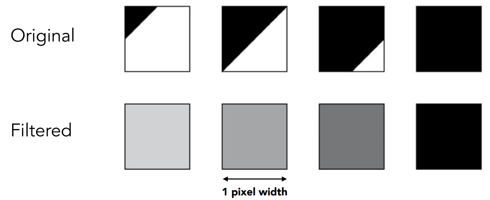
Antialiasing By Supersampling (MSAA) 通过超级采样消除混叠（MSAA）
Supersampling 超采样 Approximate the effect of the 1-pixel box filter by sampling multiple locations within a pixel and averaging their values:
通过对一个像素内的多个位置进行采样并对其值取平均值来近似 1 像素盒滤波器的效果：

-
Take samples in each pixel.
在每个像素中取 个样本。
-
Average the samples “inside” each pixel.
平均每个像素“内部”的 个样本。
-
This is the corresponding signal emitted by the display
最终结果如下：
{kind=link}
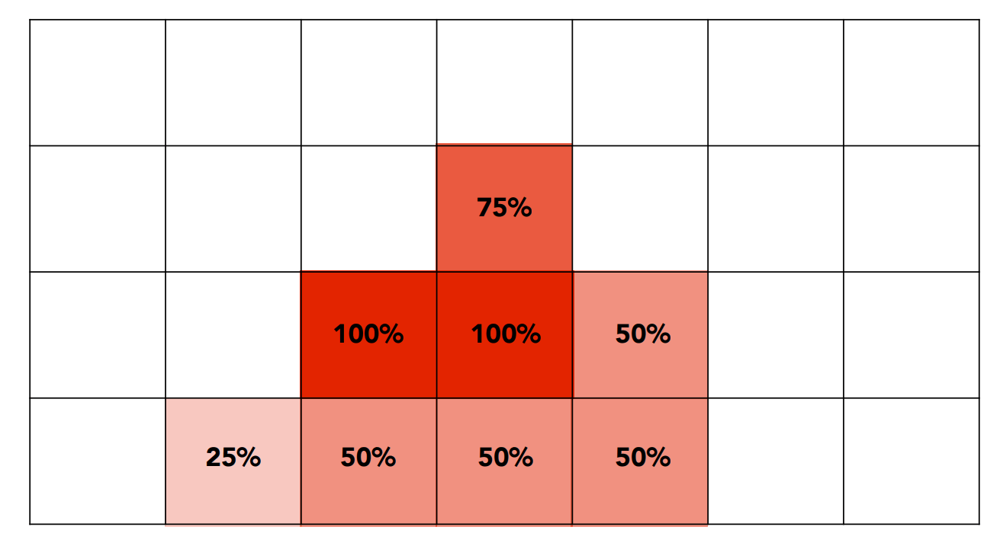
Antialiasing Today 现在消除混叠的方法 No free lunch!
-
What’s the cost of MSAA?
MSAA的代价是什么？更高的计算量
Milestones (personal idea)
-
FXAA (Fast Ap proximate AA)
基于图像后处理的抗锯齿算法
-
TAA (Temporal AA)
基于时序的抗锯齿算法
Super resolution / super sampling 超分辨率/超采样
-
From low resolution to high resolution
从低分辨率到高分辨率
-
Essentially still “not enough samples” problem
本质上仍然存在“样本不足”的问题
-
DLSS (Deep Learning Super Sampling)
DLSS（深度学习超级采样）
HW2
在上次作业中，虽然我们在屏幕上画出一个线框三角形，但这看起来并不是那么的有趣。所以这一次我们继续推进一步——在屏幕上画出一个实心三角形，换言之，栅格化一个三角形。上一次作业中，在视口变化之后，我们调用了函数
rasterize_wireframe(const Triangle& t)。但这一次，你需要自己填写并调用函数rasterize_triangle(const Triangle& t)。 该函数的内部工作流程如下：
创建三角形的 2 维 bounding box。
遍历此 bounding box 内的所有像素（使用其整数索引）。然后，使用像素中心的屏幕空间坐标来检查中心点是否在三角形内。
如果在内部，则将其位置处的插值深度值 (interpolated depth value) 与深度缓冲区 (depth buffer) 中的相应值进行比较。
如果当前点更靠近相机，请设置像素颜色并更新深度缓冲区 (depth buffer)。 你需要修改的函数如下：
rasterize_triangle(): 执行三角形栅格化算法static bool insideTriangle(): 测试点是否在三角形内。你可以修改此函数的定义，这意味着，你可以按照自己的方式更新返回类型或函数参数。 因为我们只知道三角形三个顶点处的深度值，所以对于三角形内部的像素，我们需要用插值的方法得到其深度值。我们已经为你处理好了这一部分，因为有关这方面的内容尚未在课程中涉及。插值的深度值被储存在变量z_interpolated中。
rasterize_triangle(): 执行三角形栅格化算法
//Screen space rasterization
void rst::rasterizer::rasterize_triangle(const Triangle& t) {
auto v = t.toVector4();
// TODO : Find out the bounding box of current triangle.
// iterate through the pixel and find if the current pixel is inside the triangle
int min_x = INT_MAX;
int max_x = INT_MIN;
int min_y = INT_MAX;
int max_y = INT_MIN;
for (auto point : v) //获取包围盒边界
{
if (point[0] < min_x) min_x = point[0];
if (point[0] > max_x) max_x = point[0];
if (point[1] < min_y) min_y = point[1];
if (point[1] > max_y) max_y = point[1];
}
// If so, use the following code to get the interpolated z value.
//auto[alpha, beta, gamma] = computeBarycentric2D(x, y, t.v);
//float w_reciprocal = 1.0/(alpha / v[0].w() + beta / v[1].w() + gamma / v[2].w());
//float z_interpolated = alpha * v[0].z() / v[0].w() + beta * v[1].z() / v[1].w() + gamma * v[2].z() / v[2].w();
//z_interpolated *= w_reciprocal;
// TODO : set the current pixel (use the set_pixel function) to the color of the triangle (use getColor function) if it should be painted.
for (int x = min_x; x <= max_x; ++x)
{
for (int y = min_y; y <= max_y; ++y)
{
if (insideTriangle(x + 0.5, y + 0.5, t.v))
{
auto[alpha, beta, gamma] = computeBarycentric2D(x, y, t.v);
float w_reciprocal = 1.0 / (alpha / v[0].w() + beta / v[1].w() + gamma / v[2].w());
float z_interpolated = alpha * v[0].z() / v[0].w() + beta * v[1].z() / v[1].w() + gamma * v[2].z() / v[2].w();
z_interpolated *= w_reciprocal;
if (z_interpolated < depth_buf[get_index(x, y)])
{
depth_buf[get_index(x, y)] = z_interpolated;
Eigen::Vector3f point = Eigen::Vector3f(x, y, z_interpolated);
set_pixel(point, t.getColor());
}
}
}
}
}static bool insideTriangle(): 测试点是否在三角形内
要使用向量的叉乘来判断一个点是否在三角形内部，可以按照以下步骤进行：
- 假设有一个三角形，其中包含三个顶点 A、B 和 C。
- 给定一个待检测的点 P。
- 使用向量 AB 和向量 AP 进行叉乘，并计算得到叉乘结果 cross1。
- 使用向量 BC 和向量 BP 进行叉乘，并计算得到叉乘结果 cross2。
- 使用向量 CA 和向量 CP 进行叉乘，并计算得到叉乘结果 cross3。
- 检查 cross1、cross2 和 cross3 的符号。如果它们都具有相同的符号（正数或负数），则点 P 在三角形的内部。否则，点 P 不在三角形的内部。
具体来说，可以使用右手法则来确定向量的方向。对于跨越的两条边（例如 AB 和 AP），将右手的拇指指向第一条边（AB），食指指向第二条边（AP）。如果中指指向了背离三角形平面的方向，则叉乘结果为负数。如果中指指向了朝向三角形平面的方向，则叉乘结果为正数。
这种方法基于向量的叉乘性质，通过检查叉乘结果的符号来判断点 P 是否在三角形内部。如果叉乘结果都具有相同的符号，那么点 P 在三角形的同一侧，即在三角形内部。如果叉乘结果具有不同的符号，那么点 P 在三角形的两侧，即不在三角形内部。
请注意，这种方法只适用于点和三角形都位于同一平面上的情况。
static bool insideTriangle(int x, int y, const Vector3f* _v)
{
// TODO : Implement this function to check if the point (x, y) is inside the triangle represented by _v[0], _v[1], _v[2]
Eigen::Vector3f AP(x - _v[0][0], y - _v[0][1], 0);
Eigen::Vector3f BP(x - _v[1][0], y - _v[1][1], 0);
Eigen::Vector3f CP(x - _v[2][0], y - _v[2][1], 0);
Eigen::Vector3f AB(_v[1][0] - _v[0][0], _v[1][1] - _v[0][1], 0);
Eigen::Vector3f BC(_v[2][0] - _v[1][0], _v[2][1] - _v[1][1], 0);
Eigen::Vector3f CA(_v[0][0] - _v[2][0], _v[0][1] - _v[2][1], 0);
return AB.cross(AP).z() * BC.cross(BP).z() >= 0 && BC.cross(BP).z() * CA.cross(CP).z() >= 0;
}MSAA：
//Screen space rasterization
void rst::rasterizer::rasterize_triangle(const Triangle& t) {
auto v = t.toVector4();
// TODO : Find out the bounding box of current triangle.
// iterate through the pixel and find if the current pixel is inside the triangle
int min_x = INT_MAX;
int max_x = INT_MIN;
int min_y = INT_MAX;
int max_y = INT_MIN;
for (auto point : v) //获取包围盒边界
{
if (point[0] < min_x) min_x = point[0];
if (point[0] > max_x) max_x = point[0];
if (point[1] < min_y) min_y = point[1];
if (point[1] > max_y) max_y = point[1];
}
// If so, use the following code to get the interpolated z value.
//auto[alpha, beta, gamma] = computeBarycentric2D(x, y, t.v);
//float w_reciprocal = 1.0/(alpha / v[0].w() + beta / v[1].w() + gamma / v[2].w());
//float z_interpolated = alpha * v[0].z() / v[0].w() + beta * v[1].z() / v[1].w() + gamma * v[2].z() / v[2].w();
//z_interpolated *= w_reciprocal;
// TODO : set the current pixel (use the set_pixel function) to the color of the triangle (use getColor function) if it should be painted.
for (int x = min_x; x <= max_x; ++x)
{
for (int y = min_y; y <= max_y; ++y)
{
float rate = 0.0f;
if (insideTriangle(x + 0.25, y + 0.25, t.v))
rate += 0.25f;
if (insideTriangle(x + 0.75, y + 0.75, t.v))
rate += 0.25f;
if (insideTriangle(x + 0.75, y + 0.25, t.v))
rate += 0.25f;
if (insideTriangle(x + 0.25, y + 0.75, t.v))
rate += 0.25f;
if (rate > 0.0f)
{
auto[alpha, beta, gamma] = computeBarycentric2D(x, y, t.v);
float w_reciprocal = 1.0 / (alpha / v[0].w() + beta / v[1].w() + gamma / v[2].w());
float z_interpolated = alpha * v[0].z() / v[0].w() + beta * v[1].z() / v[1].w() + gamma * v[2].z() / v[2].w();
z_interpolated *= w_reciprocal;
if (z_interpolated < depth_buf[get_index(x, y)])
{
depth_buf[get_index(x, y)] = z_interpolated;
Eigen::Vector3f point = Eigen::Vector3f(x, y, z_interpolated);
set_pixel(point, rate * t.getColor());
}
}
}
}
}